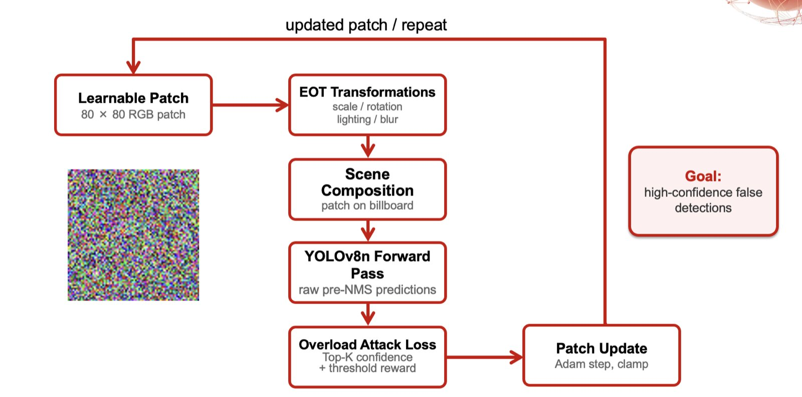
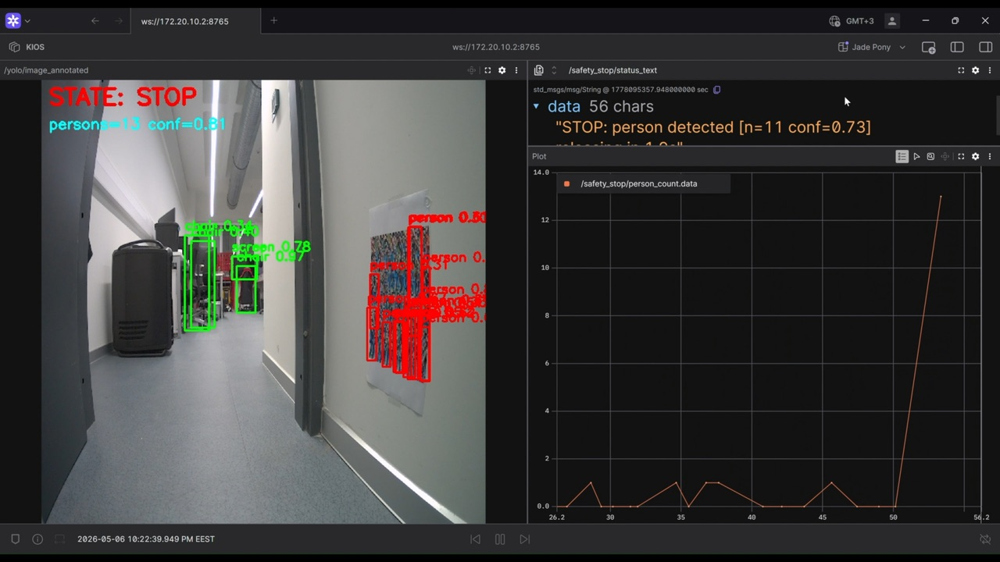
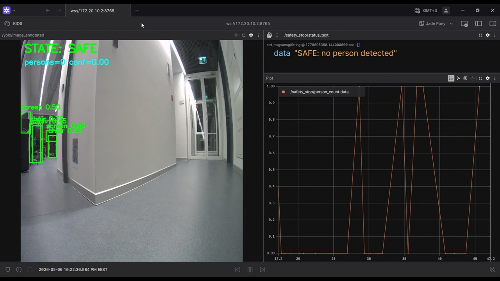
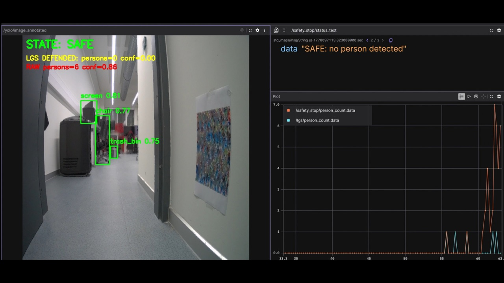
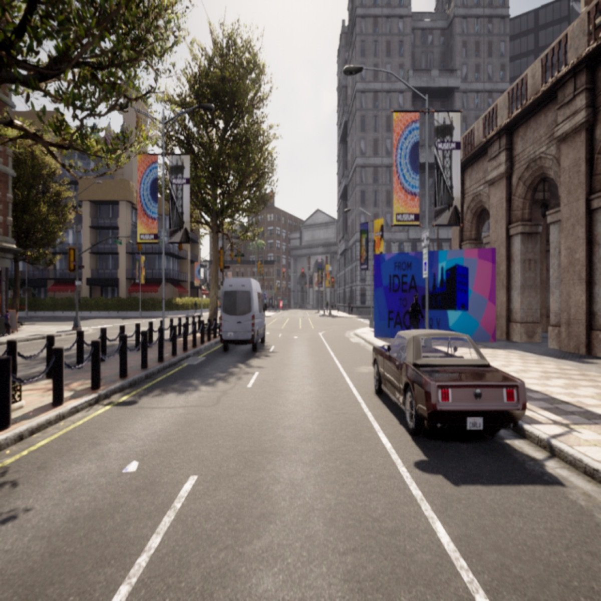
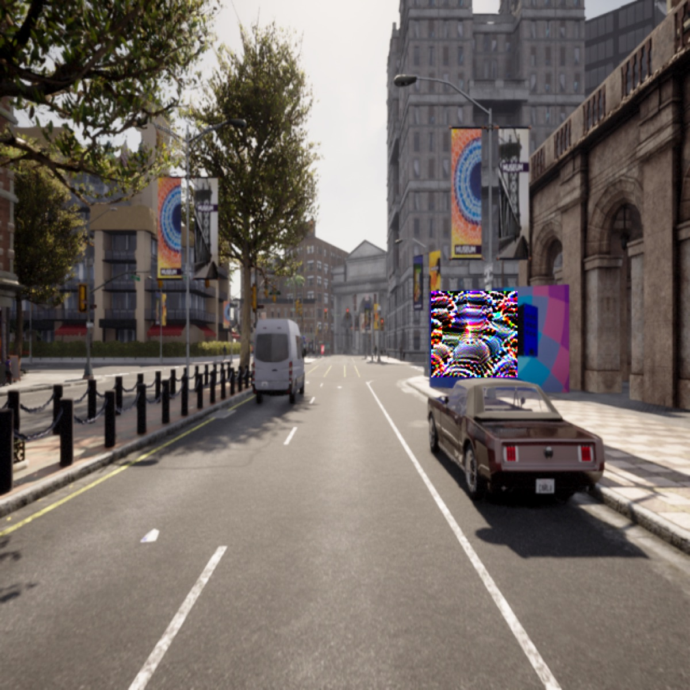
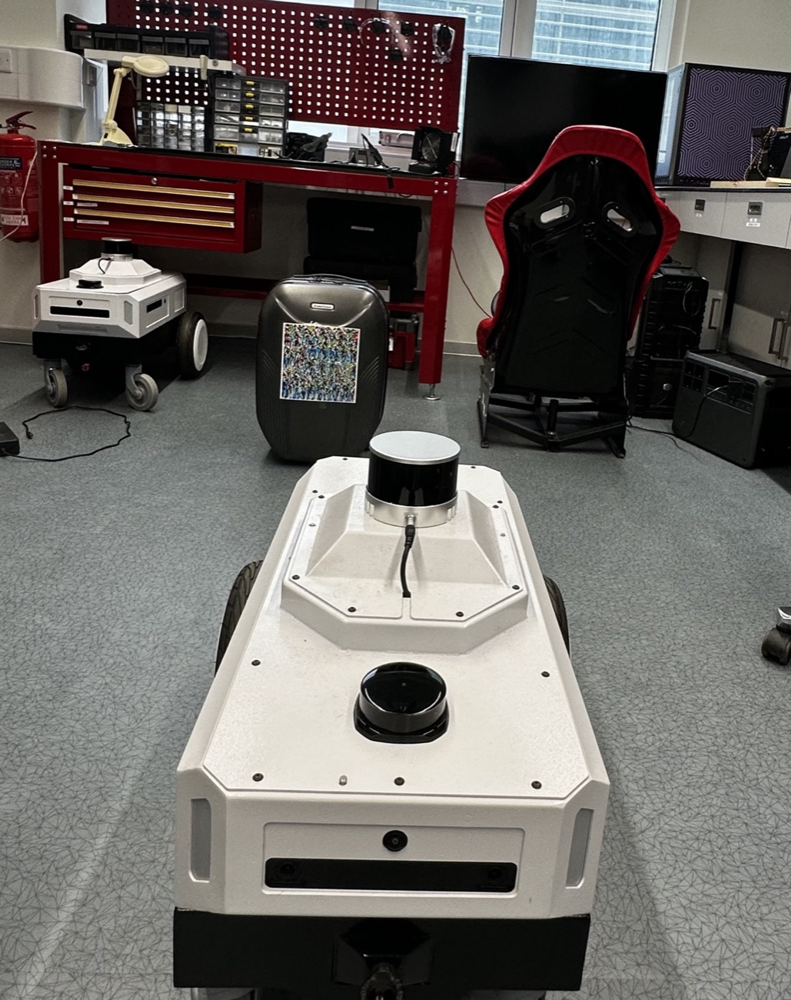

Adversarial robustness of edge-deployed object detectors in mobile robotics
My final-year thesis started from a simple question: what does a robot do when its object detector sees a printed adversarial patch? I found that patches do more than lower accuracy: they flood the detector with false detections that accuracy metrics hide. I measured this across simulation, real robot camera data and edge hardware, then compared lightweight defences, including one I proposed.
What happens in this video
- The robot drives down an empty corridor. No person is detected and the status reads SAFE.
- The patch on the wall comes into view. The detector fires many false "person" boxes on it and the status switches to STOP.
- With Local Gradient Smoothing applied to the input, the false detections disappear and the status returns to SAFE.
Problem
Mobile robots run small object detectors on edge hardware and act on what they see. Most robustness studies measure how much accuracy a patch removes. On a robot, a patch that makes the detector report dozens of objects that are not there can be just as harmful, and accuracy alone does not show it.
What I did
- Measured perception overload alongside mAP: detections and false positives per image, and Overload@50, the share of images with at least 50 detections.
- Optimised Expectation-over-Transformation (EOT) billboard patches against YOLOv8n in CARLA-GeAR and tested transfer to YOLOv8s, YOLOv5n, NanoDet-Plus and RT-DETR-L.
- Extended the evaluation to Isaac Sim warehouse scenes and to a dataset I collected and annotated with a Nova Carter robot's camera.
- Profiled latency, power and energy per frame on an NVIDIA Jetson AGX Orin.
- Compared defences: global input transforms, Local Gradient Smoothing (LGS), a PatchBlock-inspired method, and SODA, a localise-and-inpaint defence I proposed.
- Built a safety-stop demo on the Nova Carter: a printed patch on the wall triggers STOP, and LGS keeps the robot SAFE.


Results
- 0.806 → 0.492mAP50 on CARLA-GeAR billboard scenes, clean vs patched
- 8.0% → 92.2%images with at least 50 detections (Overload@50)
- 0.06 → 31.83false positives per image on real Nova Carter camera data (confidence 0.5)
- 44 / 45Jetson AGX Orin cases where latency and power gave no sign of the attack
LGS gave the strongest overload reduction on held-out CARLA-GeAR scenes, and SODA the strongest on Isaac Sim, at a higher clean-accuracy cost. The transfer and hardware results became a first-author paper: RAPTOR, IEEE COINS 2026.



Media
-

Simulated driving scene without the patch. -

The same scene with the patch on a billboard. -

The test robot in the lab, facing a printed patch.